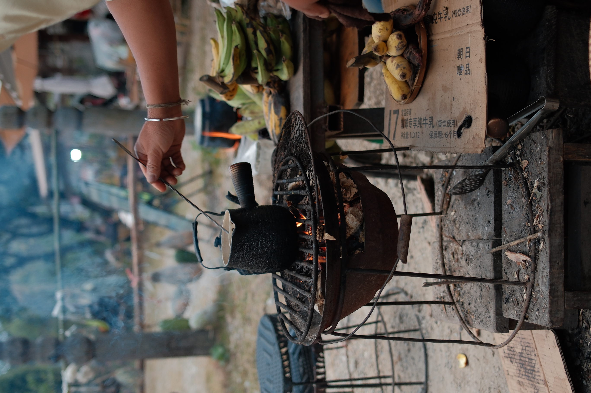
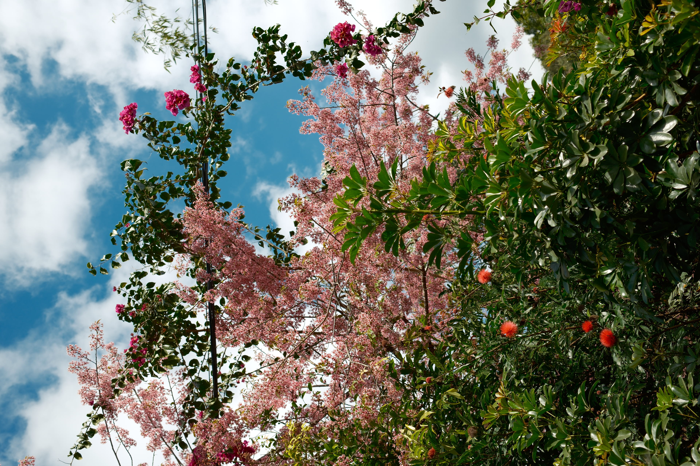
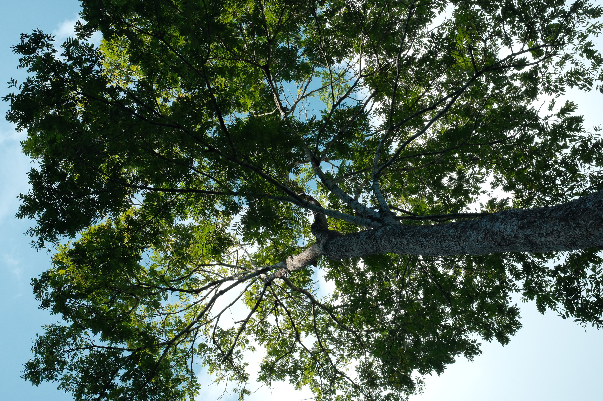
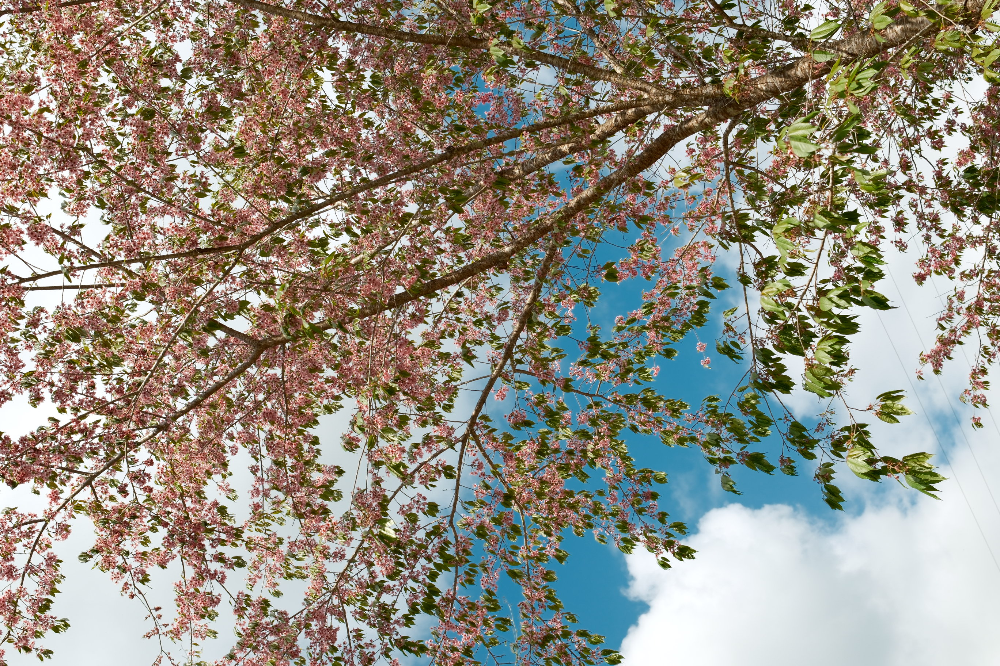
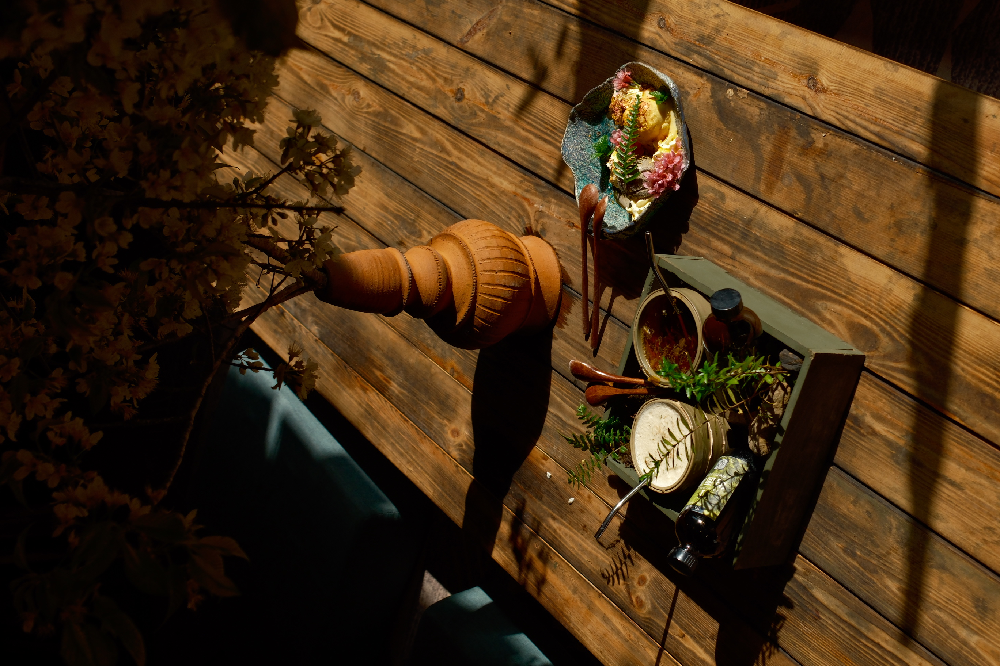
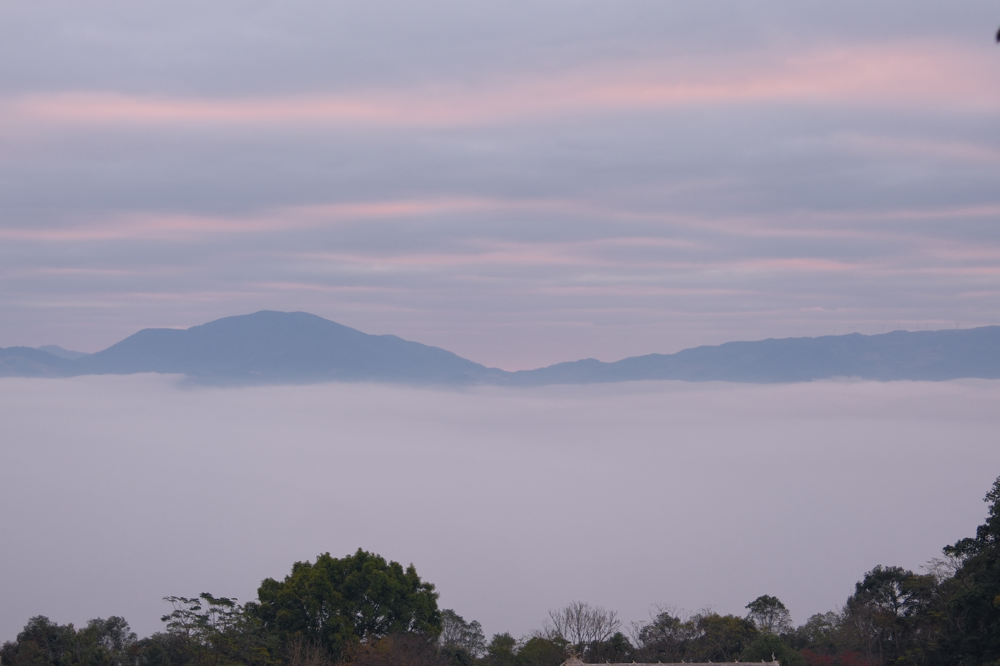
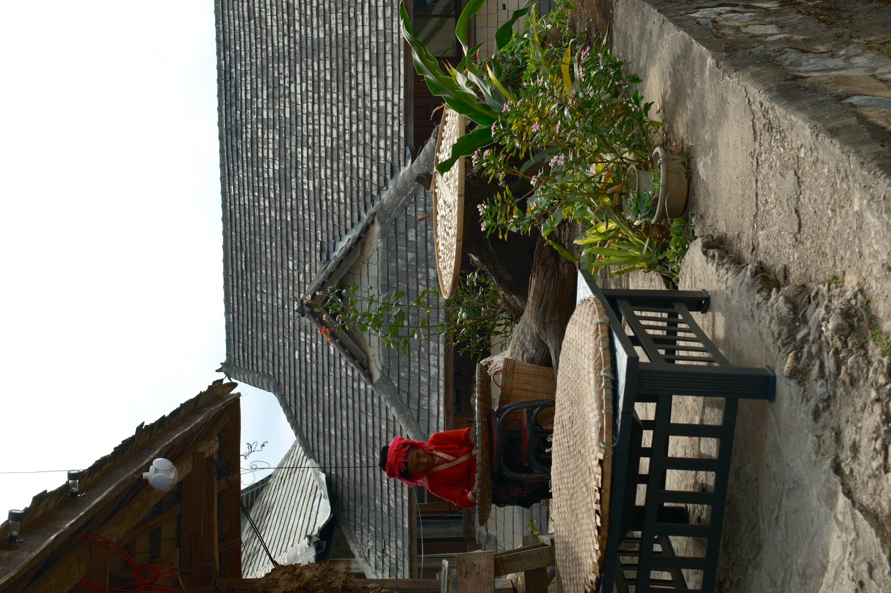
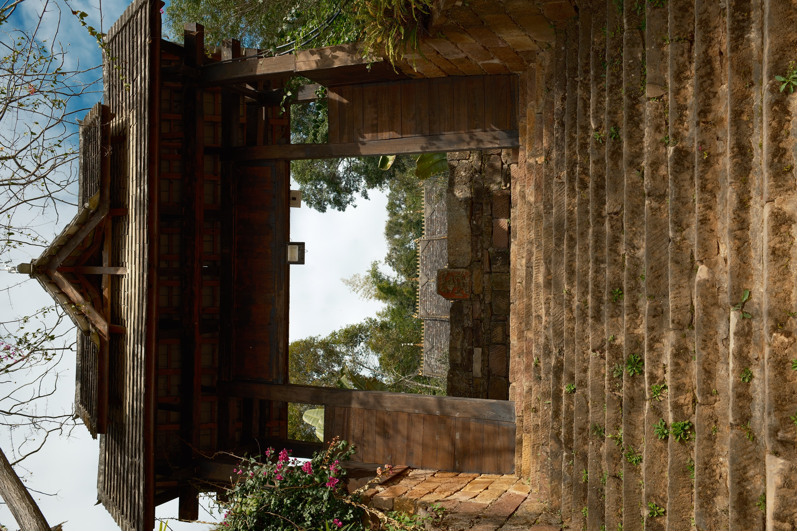

Pu Er

Tiled Roof House
2025-01-04
Many houses with tiled roofs in the mountains' village. I really love this kind of house; it stays very cool inside. It is very comfortable to sit inside and relax.
A Tall Tree
2025-01-04
A Tree in a Village House. This tree is just like people's faith.


Milk Tea
2025-01-05
The milk tea is currently simmering on the stove. An auntie is helping me brew it—it's authentic, handmade milk tea that tastes absolutely amazing, though it does take a bit of time to prepare.
Pink Flowers
2025-01-05
I saw pink flowers blooming out of a bush by the roadside—they looked beautiful.


Massive Tree
2025-01-05
Gazing up at a massive tree.
Pink Flowers Tree
2025-01-05
A tree covered in pink flowers.


Afternoon Tea
2025-01-05
I stopped at a shop for afternoon tea. I tried a milk tea made with Pu'er—a tea variety with a distinctive character—and it was very fragrant. I also had some ice cream.
Morning Fog in the Valleys
2025-01-06
I waited on the mountain for a long time this morning for the sunrise. But there were too many clouds.


An Auntie
2025-01-06
An auntie is doing some farm work in her home's courtyard. There is a lot of food laid out to dry, as well as numerous baskets.
Temple
2025-01-06
The steps at the entrance of a temple, flanked by many flowers.
